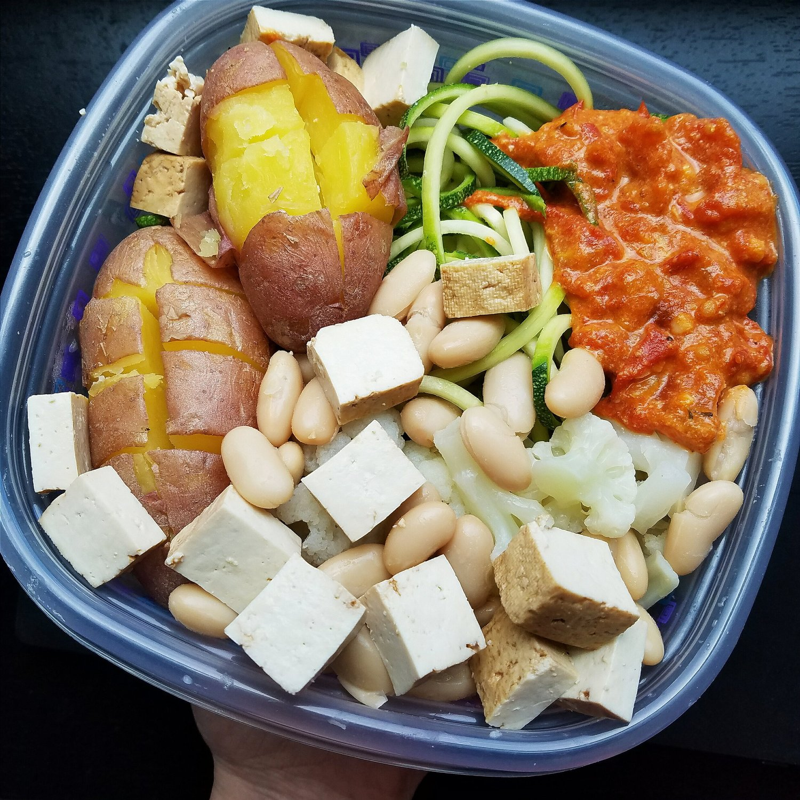

Tomato Cream Zucchini Pasta (Vegan, Gluten Free)
Delicious, aromatic tomato cream zucchini pasta made with fresh tomatoes and herbs. But it doesn't take a complicated method or pro cooking skills to whip up this savory vegan meal! This simple recipe is great for a dinner for two, or for preparing multiple batches at once as meal prep for the week.
I'm a little spoiled. My mom has a garden that she maintains every year, and the older I get the more I've come to really appreciate her homegrown vegetables. Her go-to vegetables always grown are tomatoes, zucchini, yellow squash, and bell peppers. So amazing. She grows more tomatoes than one person can handle, so she cans tomato sauce and steamed tomatoes by the dozens to use through the year and also give to family. When they're fresh, I snag them up! I've been taking a ton when I visit on weekends, and I created this magnificent recipe with them!
I'm not a huge fan of red sauces. I've always been an alfredo-loving girl, and if I could have pizza without the tomato sauce, I do. Just bread and cheese, please. But this sauce is special. First of all, the fresh homegrown tomatoes are so flavorful and sweet. Love is the key ingredient I swear. But secondly, I added coconut milk and nutritional yeast to give it some creaminess! It's got pink vodka-sauce vibes, minus the vodka. Probably. Maybe.
I can't stress how easy this recipe was to make! I also used the free zucchini from my mom's garden hahaha for the perfect zucchini noodles. Using normal pasta is cool and all, but something about fresh, light zucchini noodles paired with the creamy tomato sauce is just so magnificent. If you haven't had zucchini noodles before, I super duper recommend them. Not only are they delicious, but they're fun!!! And a spiralizer isn't as expensive as you'd think. Decently priced!!Incase you missed it, my birthday was last week!!! It was filled with yummy vegan chicken and waffles, vegan cheesecake, lots of Olympics viewing, and hanging out with friends and coworkers. :) We went to Top Golf for my first time, have you heard of it?? I wanted to do something new for my birthday, and so Top Golf it was! I kept hearing how fun it is, and it sure was fun! It lived up to the expectation. I certainly wasn't good at it, but it was still great to learn hahaa. I also wanted to go see Suicide Squad...but...after hearing reviews....I think ima pass until it's out on DVD.
Anywho, try this recipe out! I made it for lunch meal prep, and it was phenomenal!! I highly recommend the pairing of white beans and potatoes. Yummy yummy. This healthy tomato cream zucchini pasta is a great low carb options, but it's also completely vegan and gluten free!

Tomato Cream Zucchini Pasta
Serves: 2
-
450 g tomatoes
-
2 garlic cloves, minced
-
1/4 cup coconut milk
-
2 TBSP nutritional yeast
-
1/2 tsp onion powder
-
1/2 tsp parsley
-
1/4 tsp black pepper
-
2-3 medium zucchini (approx. 500-600 g)
Roughly chop the tomatoes. Add the tomatoes (including the liquids) and garlic cloves to a large nonstick pan. Heat the pan to medium and let everything simmer down for 4-5 minutes. Once the tomatoes begin to soften, add the remaining sauce ingredients (coconut milk, nutritional yeast, onion powder, parsley, and black pepper). Stir to incorporate. Cover the pan and let simmer for 10 minutes, or until the sauce is thickened.
While the sauce cooks down, you can prepare the zucchini noodles. Wash your zucchini and chop off the ends. Process your zucchini through a spiralizer to make beautiful zucchini noodles! You can use them raw, or lightly steam them for 2 minutes. I choose to cook mine in this handy microwave steamer. Looove it.